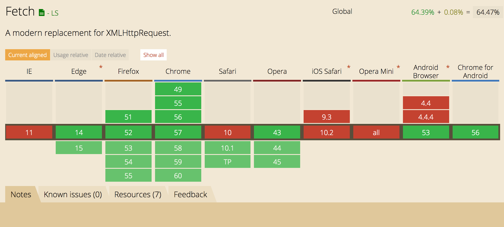
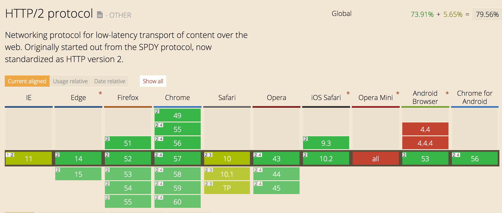

Клиент-Сервер
HTTP, REST, xmlHttpRequest, fetch, CORS
Гоголев Сергей
HTTP
(HyperText Transfer Protocol)
Формат запроса
POST /notes HTTP/1.1 Accept: application/json Accept-Encoding: gzip, deflate Host: localhost:5000 User-Agent: HTTPie/0.9.3 { "title": "Add js linter", "description": "Eslint or jscs" }
Формат ответа
HTTP/1.1 200 OK Content-Length: 67 Content-Type: application/json; charset=utf-8 Date: Wed, 16 Mar 2016 14:32:18 GMT X-Powered-By: Express { "createdAt": 1458138738899, "name": "music", "text": "Music to listen" }
URL (Uniform Resource Locator)
http://localhost:5000/notes?limit=10 ⇡ ⇡ ⇡ ⇡ ⇡ scheme host port path query
POST /notes?limit=10 HTTP/1.1
Accept: application/json
Accept-Encoding: gzip, deflate
Host: localhost:5000
User-Agent: HTTPie/0.9.3
{
"title": "Add js linter",
"description": "Eslint or jscs"
}
Ресурсы
/notes - заметки /notes/film - заметка о фильмах
/notes/film/public - публичность заметки
Методы
GET – получение ресурса POST – создание ресурса PUT – обновление ресурса PATCH – обновление фрагмента ресурса DELETE – удаление ресурса HEAD – получение только заголовков OPTIONS – согласование взаимодействия
Коды ответа
200 Ok 201 Created 204 No content 301 Moved Permanently 302 Moved Temporarily 400 Bad request 401 Unauthorized 403 Forbidden 404 Not found 409 Conflict 500 Internal Server Error 504 Gateway Timeout
418 I'm a teapot

451 Unavailable For Legal Reasons
Stateless
Не хранит состояние клиента между запросам, всё состояние целиком описывается в каждом запросе
Сжатие данных
GET /notes/films HTTP/1.1 Accept-Encoding: gzip, deflate
HTTP/1.1 200 OK Content-Encoding: gzip
Keep-alive
Использование одного TCP-соединения для многократных HTTP-запросов

Keep-alive: HTTP/1.0
GET /notes/films HTTP/1.0 Connection: keep-alive
HTTP/1.0 200 OK Connection: keep-alive
Keep-alive: HTTP/1.1
GET /notes/films HTTP/1.1
HTTP/1.1 200 OK Connection: close
Кеширование: Политика
HTTP/1.1 200 OK Cache-Control: public, max-age=31536000, no-cache
| private | Закешируй только у конечного клиента (в браузере) |
| public | Закешируй и на промежуточных серверах (на CDN) |
| max-age | Закешируй на указанное количество секунд |
| no-cache | Кешируй, но каждый раз проверяй не изменился ли ресурс |
| no-store | Не кешируй ресурс |
Кеширование: Инвалидация
HTTP/1.1 200 OK Cache-Control: public, max-age=31536000, no-cache Last-modified: Wed, 15 Nov 1995 04:58:08 GMT
GET /index.css HTTP/1.1 If-Modified-Since: Wed, 15 Nov 1995 04:58:08 GMT
HTTP/1.1 304 Not Modified
Кеширование: Инвалидация
HTTP/1.1 200 OK Cache-Control: public, max-age=31536000, no-cache ETag: d1d3c5c4cdb2568785ba1a366b7fb048
GET /index.css HTTP/1.1 Host: urfu2016-notes.surge.sh If-None-Match: d1d3c5c4cdb2568785ba1a366b7fb048
HTTP/1.1 304 Not Modified
Взаимодействие приложений


repo.createIssue(title, description)
⇡ ⇡
method arguments
RPC (Remote Procedure Call)
// request
{
"jsonrpc": "2.0",
"id": 1,
"method": "createIssue",
"params": [title, description]
}
// response
{
"jsonrpc": "2.0",
"id": 1,
"result": "Ok"
}REST (REpresentational State Transfer)
POST /issue HTTP/1.1 Host: github.com { "title": "Add linter for javascript", "description": "ESLint or JSCS" }
HTTP/1.1 201 Created Location: /issue/42
REST и RPC
RPC опирается на методы (действия)
REST опирается на ресурсы (сущности)
RPC использует HTTP только как транспорт
REST основан на HTTP, дополняет правилами
REST
Архитектурный стиль, позволяющий сделать сетевое взаимодействие удобнее, прозрачнее и стандартизованнее
Рой Филдинг
Architectural Styles and the Design of Network-based Software Architectures
Ресурсы
Use path, not query
/api?type=notes&id=films /notes/films
Use plurals, not singles
/note/films /notes/films
Use only nouns, not verbs
POST /notes/add POST /notes
Ресурсы
Avoid verbiage, use plurals
/note_list /notes
Use lowercase
/pullRequests /pull-requests /pulls
Use nesting
/comments?note_id=films /notes/films/comments
GET
Получает состояние ресурса в одном из представлений (JSON, XML, HTML)
GET /notes GET /notes/films GET /notes/films/public GET /notes?limit=10
200 Ok 404 Not found 400 Bad request /notes?limit=muahahaha
Не модифицирует ресурс!
POST
Создаёт новый ресурс с начальным состоянием, когда мы не знаем его ID
POST /notes
201 Created 409 Conflict
PUT
Создаёт новый ресурс с начальным состоянием, когда мы знаем его ID
PUT /notes/films PUT /notes/films/public
200 Ok 204 No content
PUT
Обновляет состояние существующего ресурса целиком
PUT /notes/films PUT /notes/films/public
200 Ok 204 No content 404 Not found
DELETE
Удаляет существующий ресурс
DELETE /notes/films DELETE /notes/films/public
200 Ok 204 No content 404 Not found
PATCH
Обновляет состояние существующего ресурса частично
PATCH /notes/films
200 Ok 204 No content 404 Not found
HEAD
Проверяет существование ресурса
HEAD /notes/films
200 Ok 404 Not found
OPTIONS
Запрашивает правила взаимодействия
OPTIONS /search
HTTP/1.1 204 No content Allow: OPTIONS, GET, HEAD
POST /search
HTTP/1.1 405 Method not allowed
Связность
POST /notes HTTP/1.1 Accept: application/json Accept-Encoding: gzip, deflate Host: localhost:5000 { "title": "Films", "description": "Films to watch" }
HTTP/1.1 201 Created Location: /notes/films
Связность
GET / HTTP/1.1 Host: api.github.com
HTTP/1.1 200 Ok { current_user_url: "https://api.github.com/user", gists_url: "https://api.github.com/gists{/gist_id}" }
Hypertext Application Language
GET /notes HTTP/1.1
HTTP/1.1 200 Ok Accept: application/hal+json { "notes": [ { "title": "Films"} ], "_links": { "self": { "href": "/notes" }, "next": { "href": "/notes?page=2" }, "find": { "href": "/notes/{?id}", "templated": true } } }
Идемпотентность
Один и тот же запрос приводит к одному и тому же результату
GET – да (безопасный) OPTIONS – да (безопасный) HEAD – да (безопасный) POST – нет PUT – да DELETE – да PATCH – нет
XMLHttpRequest
XMLHttpRequest
var xhr = new XMLHttpRequest();
xhr.open('GET', '/notes');
xhr.send();
xhr.open('GET', '/notes', false);
xhr.open('GET', '/notes', false, user, password);
xhr.abort();
xhr.onreadystatechange
xhr.onreadystatechange = function() {
if (xhr.readyState !== 4) {
return;
}
if (xhr.status !== 200) {
console.log(xhr.status + ': ' + xhr.statusText);
} else {
console.log(xhr.responseText);
}
}
xhr.readyState
UNSENT 0 начальное состояние OPENED 1 вызван open HEADERS_RECEIVED 2 получены заголовки LOADING 3 загружается тело DONE 4 запрос завершён
0 → 1 → 2 → 3 → … → 3 → 4
xhr.setRequestHeader
xhr.setRequestHeader('Content-Type', 'application/json');
xhr.getResponseHeader
xhr.getResponseHeader('Content-Type');
xhr.getAllResponseHeaders();
// Cache-Control: max-age=31536000
// Content-Type: text/html
xhr.timeout
xhr.timeout = 30000; // 30s
xhr.ontimeout = function () {
console.log('Try again later');
}
FormData
<form name="notes">
<input name="title" value="">
<input name="description" value="">
</form>
var formData = new FormData(document.forms.notes);
formData.append("createdAt", new Date());
var xhr = new XMLHttpRequest();
xhr.open("POST", "/notes");
xhr.send(formData);
FormData
<form name="notes">
<input name="title" value="">
<input name="description" value="">
<input type="image" value="">
</form>
var image = document.querySelector('input[type="image"]')
formData.append("picture", image.files[0]);
var xhr = new XMLHttpRequest();
xhr.open("POST", "/notes");
xhr.send(formData); // multipart/form-data.
Download progress
xhr.onprogress = function(event) { // Every 50 ms
console.log(event.loaded); // Bytes
console.log(event.total); // Content-Length || 0
}
Upload progress
xhr.upload.onprogress = function(event) {}
xhr.upload.onload = function() {}
xhr.upload.onerror = function() {}
CORS
Cross Origin Resurce Sharing
Same origin policy
Origin = scheme + host + port
CORS: Простые запросы
Простые методы
GET, POST, HEAD, DELETE
Простые заголовки
Accept
Accept-Language
Content-Language
Content-Type
Cookie
CORS: Простые запросы
GET /notes HTTP/1.1 Host: awesomenotes.com Origin: http://notesdashboard.ru
HTTP/1.1 200 Ok Content-Type: text/html Access-Control-Allow-Origin: http://notesdashboard.ru
HTTP/1.1 200 Ok Content-Type: text/html Access-Control-Allow-Origin: *
CORS: Сложные запросы
PUT /notes/films HTTP/1.1 Host: awesomenotes.com Origin: http://notesdashboard.ru
OPTIONS /notes/films HTTP/1.1 Host: awesomenotes.com Access-Control-Request-Method: PUT Access-Control-Request-Headers: accept-encoding
preflight
HTTP/1.1 204 No content Access-Control-Allow-Methods: PUT Access-Control-Allow-Headers: accept-language, origin, accept-encoding Access-Control-Max-Age: 60000
Fetch
Fetch
var promise = fetch(url[, options]);
Fetch
{
methtod: 'POST',
headers: {
'Accept': 'application/json'
},
body: new FormData(), // 'foo=bar&lorem=ipsum'
mode: 'same-origin', // cors
cache: 'no-cache', // default, no-store, reload, force-cache
}
Fetch
fetch('/notes')
.then(function(response) {
console.log(response.headers.get('Content-Type'));
// application/json
console.log(response.status);
// 200
return response.json(); // .text()
})
.catch(console.error);
Fetch
Нет возможности следить за прогрессом
Нет возможности отменить запрос
Fetch
HTTP/2
Бинарный

Бинарный
Меньше размер пакета
Разделение запроса на фреймы
Потоки

Потоки
Одно двунаправленное TCP-соединение
Запросы и ответы без блокировки
Сжатие заголовков

Сжатие заголовков

Сжатие заголовков
Меньше размер пакета
Устраняется дублирование
HTTP/2 в браузерах
HTTP/2 в nginx
Поддерживается с версии 1.9.5
HTTP/2 в node.js
Поддержка в качестве модуля
molnarg/node-http2
HTTP
High Performance Browser Networking
What Web Developer Should Know About HTTP